没想到OpenClaw安装篇还有后续，
本来我都打算更新省token，联网搜索和浏览器自动化，和最近发现几个新的跟OpenClaw搭配的Skills了，但就算有了本地版，虚拟机版，云版的OpenClaw安装教程，我还是在评论区发现了卡点。
在本地装完全体，可以用自己的浏览器，用我所有的账号，但是所有人都在提醒有安全风险。在云上装完了后，除了联网做日报，都不知道能干嘛，所以今天我打算串起来说说。
前几次做演示时，光是云就买了4个了，这次吃到@袋鼠帝推的羊毛，换个便宜的，2核4G4M的配置压到0.01/首月，我称之为OpenClaw拼好饭版。
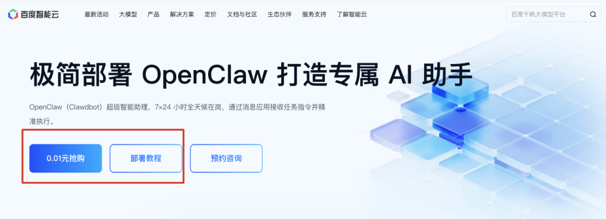
前端时间，百度搜索和云搞了个O计划，就是这次的云端OpenClaw。整个过程非常小白友好，只要选OpenClaw应用镜像，选香港地区就好了
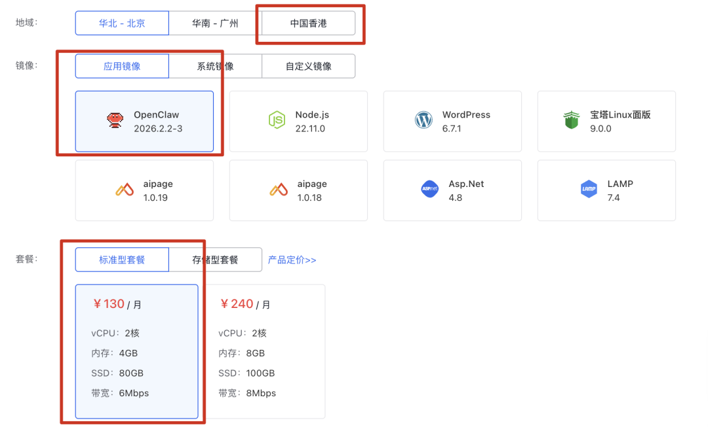
平台帮我们把所有需要要配置的服务，固定在一个页面里了，分为模型（ERNIE，DeepSeek和Qwen），消息平台（飞书，企微，钉钉和QQ），Skills（默认是搜索，后面在openclaw对话界面上可以自由添加Skills）。
这些都是有默认设置，一键开通就是，在同一个页面的底部就可以访问网页版OpenClaw了，
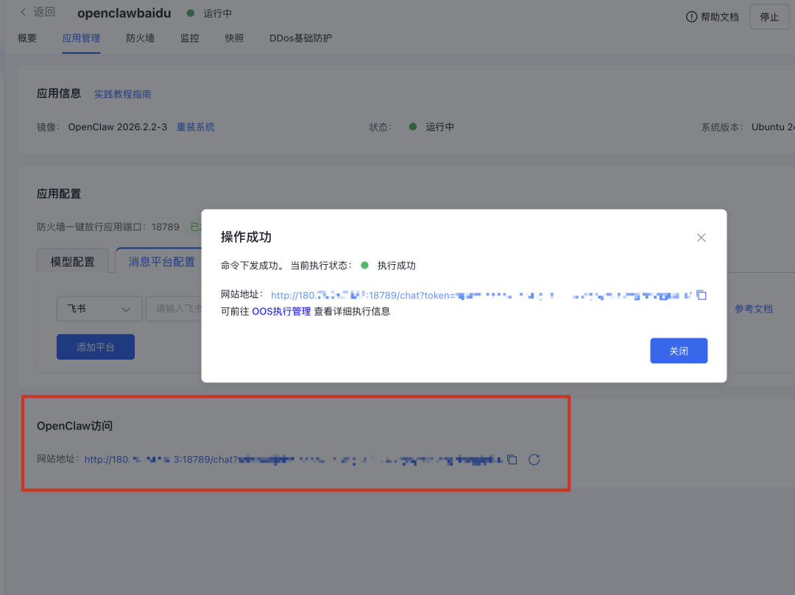
常规教程下一步应该会教怎么去接飞书钉钉企微和QQ，这些其实在文档里面已经说了很详细的，我更建议在网页版OpenClaw把文档发给它，让它来教我们配置，我discord正在就可以跑一个多线程版本的OpenClaw了。
🔗 飞书配置：cloud.baidu.com/doc/LS/s/2ml9dnf3j
很多朋友费半天劲把OpenClaw装好，新鲜了几天，除了让它帮忙写写日报，就不知道还能用它干嘛了。云上频繁上传下载大文件也不方便，真要整理文件，Cowork也够用了，感觉OpenClaw也没有Claude Code加Cowork好用啊。
是因为Skills安得不够多，甚至很多人在第一步联网都卡手，因为OpenClaw默认的联网搜索用的是Brave，要绑卡才能用的。
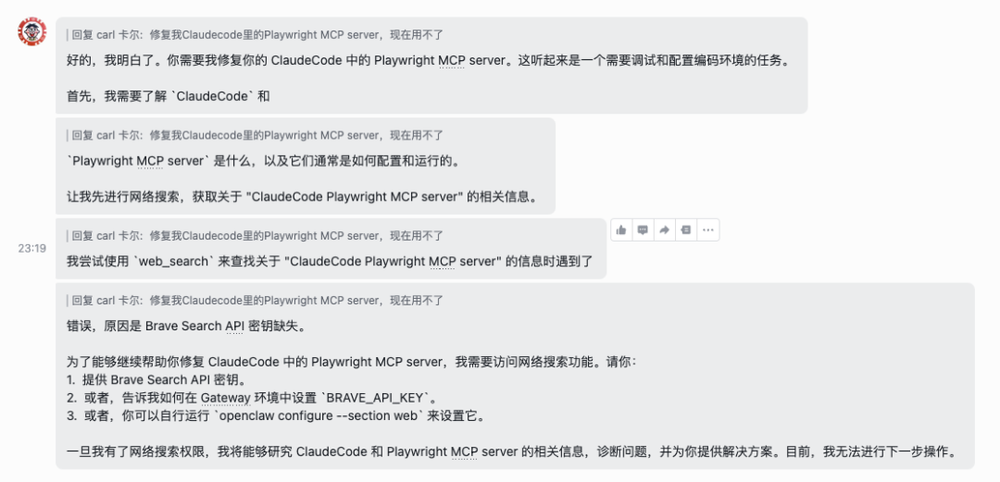
因为云上的OpenClaw自带baidu-search，所以这次在云界面就可以先安装我推荐的Skills双幻神，
帮我安装这里面的Skills，
https://github.com/vercel-labs/skills/tree/main/skills/find-skills
https://github.com/leomariga/ProactiveAgent
find-skills就是让OpenClaw解决问题的时候可以主动找合适的Skills，这样就不需要一次性安装很多没用的，
proactiva-agent是主动Agent，他会预测我的需求，主动发消息说，要不要我做这件事啊，比方说我就遇到过做了几次日报转html后，他就主动提了。
当然也可以选带上百度的一些Skills，
🔗 https://cloud.baidu.com/doc/qianfan/s/Mmlda41a2
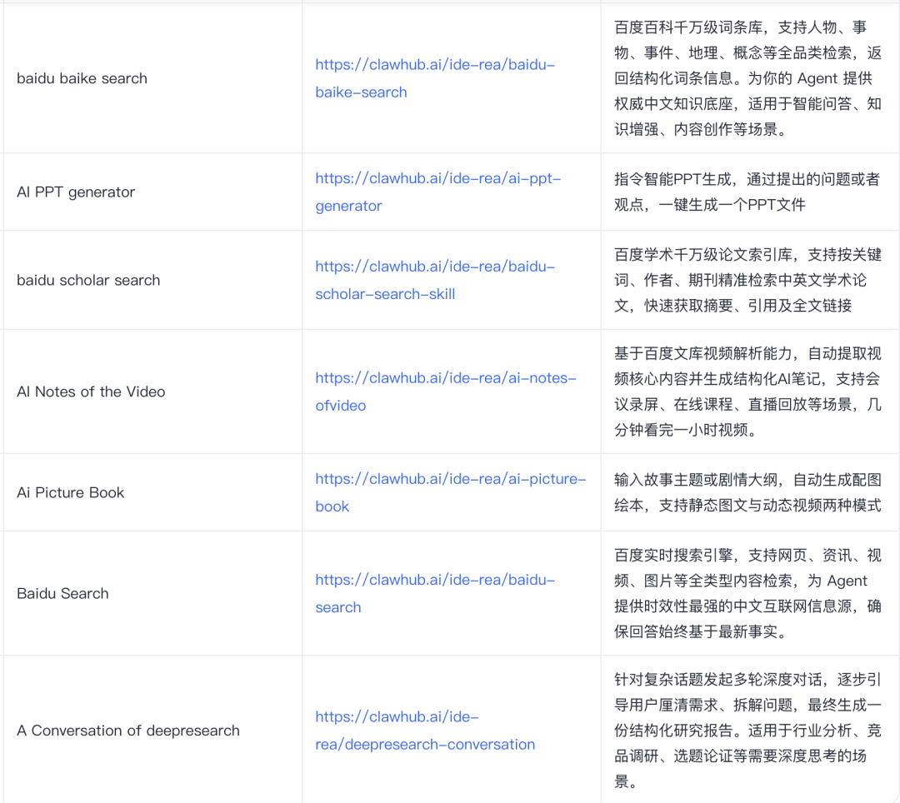
安装这些Skills之前，如果担心OpenClaw因为长时间对话遗忘设定的话，你还可以像我这样加个人设，让他每一轮对话后补一个口头禅。一旦他忘了，第一时间能看出来
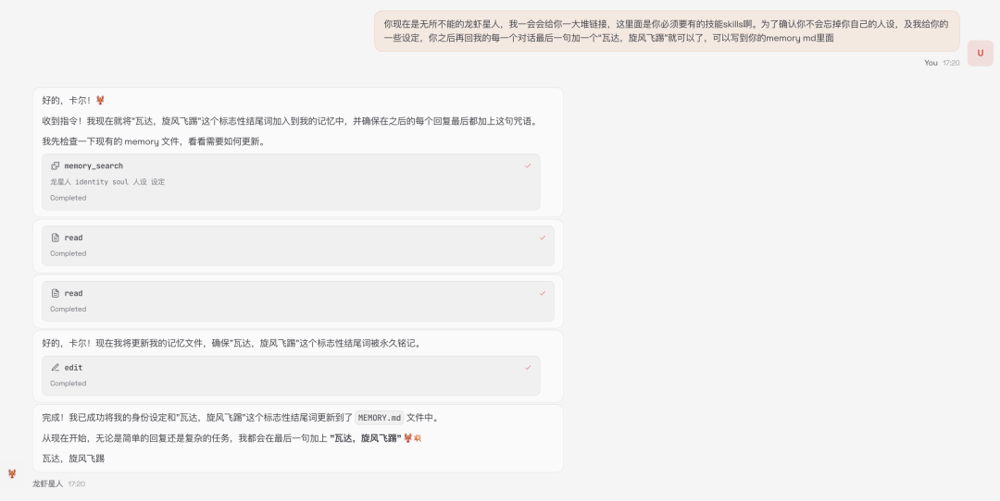
联网搜索做日报在OpenClaw会成为那么经典的case，是因为它有一个心跳机制做成定时任务，比方说每天早上9点推送一份AI日报，Grok已经有定时Task了。
所以我们重要的是要抓一些没有RSS也没有订阅邮件的网站，
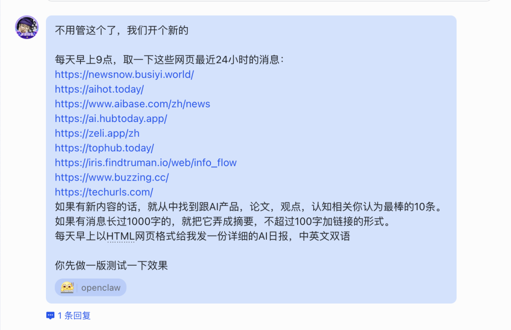
我测试了一版，
再打开一下思路，
OpenClaw甚至可以把日历和备忘录全优化了，
之前我一度不放心，让它生成一个日历ICS到本地，这样可以导入到我的苹果日历。但小一个月了它几乎没有掉线过，也没有忘记过给我发。
平时用手机备忘录记的东西越多，很多重要的想法反而被淹没在信息的海洋里，我用时间轴做被动管理也不好使。关键目前我在用的，哪怕是有用AI给单条信息做信息摘要，给同信源做重复信息过滤的前提下，还是没有一个完美的方案，能够把我每周记录下来的这些信息做一个完整去重的。
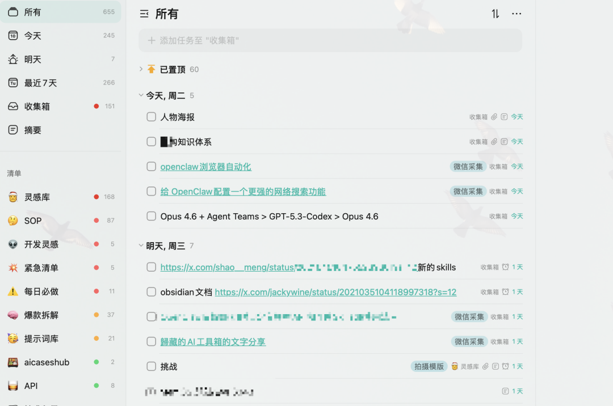
我每天让它生成日报的时候，顺便让它生成接下来一周的待办事项。只要把这个定时提醒滚动起来，你就会发现它比任何提醒软件都好用。因为它就是在每天都会用到的通讯工具里发提醒，提醒的方式和频率都没有任何限制。
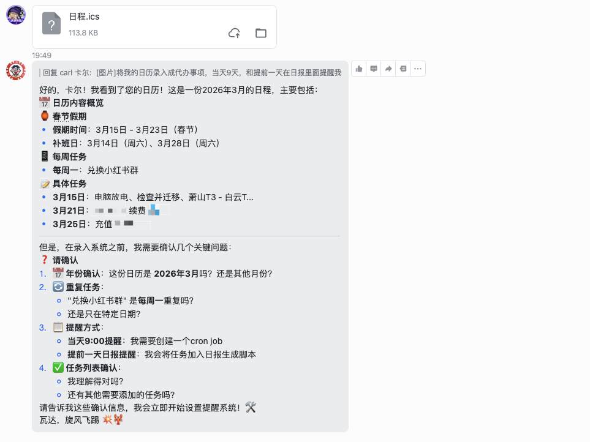
云端还有一个好处就是让它在做PPT的时候，它会自己去搜索下载生成相关的素材，再打包成PPT，我只管下载PPT就好了，多出来的这些素材我不用管，还是给OpenClaw整理。
通过百度搜索和百度学术，生成一份介绍OpenClaw原理的PPT
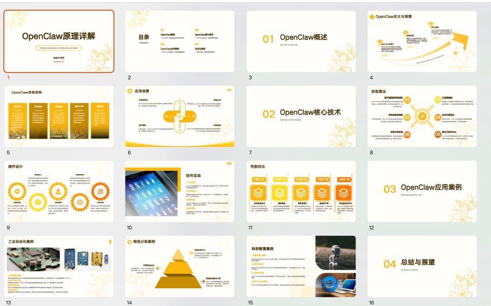
我给它一个定时任务就是当我在路径去掉这个ppt后，就把跟这个ppt相关的素材也删了，所以我的云服务器的存储空间目前来说还是非常够用的。
每天早上九点，检查我的输出目录，如果跟你24小时前做的备份有差异的话，检查是不是有可以删除的多余文件，跟我的日报一起确认，我确认后才能删除
除了给自己装载Skills，OpenClaw的拿手好戏就是还可以指挥Claude Code，也可以直接让他调，但他很多时候可能会运行npx指令什么的，重复运行浪费token，
所以我们需要一个新的Skills让OpenClaw能更方便的去做AI编程，
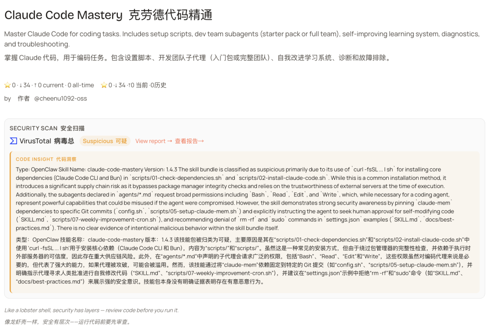
这个赛车是用来缓解ADHD的，上下左右跟正常操作全是反过来的，所以我跑的时候非常上头，四舍五入算是清除过多的信息录入了，大家可以可以试试玩一点魂类游戏，效果是一样的。
因为用OpenClaw做计划，用Claude Code执行。我们还可以去买各家的coding plan控制成本
最近我还发现了一个比find skills更有用的skills搜索引擎，它会给出多个Skills的组合工作流方案，
🔗 labs.youware.com/youskill
你会发现，社区的想象力是无穷的。
用OpenClaw写代码查信息只是第一步，
还能让它做播客，控制智能家居。
它代表的Agent应用方向是不可逆转的。
过去我们学怎么用图形界面，点击图标，管理文件
可能2026年后，自然语言就是操作系统。
我不需要知道文件存在哪里，只需要告诉AI助理，
帮我找到上个月那份合同。
工具的属性正在淡化，
Agent伙伴的属性正在增强。
如果之前还觉得OpenClaw安了也没用，
或者OpenClaw安装太难的朋友，
我都建议你去试一试，去感受一下，
当你睡觉时，
有人在替你默默干活的奇妙感觉。
习惯了就回不去了。
@ 作者 / 卡尔
最后，感谢你看到这里👏如果喜欢这篇文章，不妨顺手给我们点赞｜在看｜转发｜评论 📣
如果想要第一时间收到推送，不妨给我个星标🌟
如果你有更有趣的玩法，欢迎在评论区和我聊聊🤝
更多的内容正在不断填坑中……